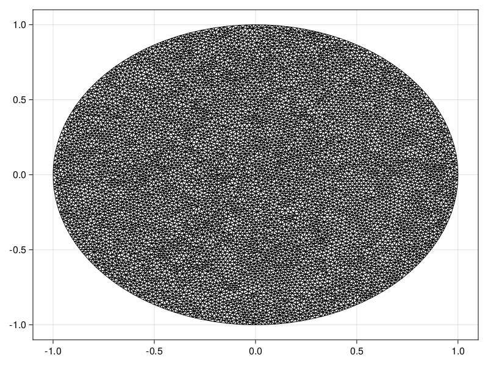
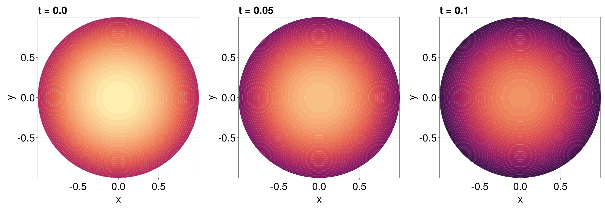

Reaction-Diffusion Equation with a Time-dependent Dirichlet Boundary Condition on a Disk
In this tutorial, we consider a reaction-diffusion equation on a disk with a boundary condition of the form $\mathrm du/\mathrm dt = u$:
\[\begin{equation*} \begin{aligned} \pdv{u(r, \theta, t)}{t} &= \div[u\grad u] + u(1-u) & 0<r<1,\,0<\theta<2\pi,\\[6pt] \dv{u(1, \theta, t)}{t} &= u(1,\theta,t) & 0<\theta<2\pi,\,t>0,\\[6pt] u(r,\theta,0) &= \sqrt{I_0(\sqrt{2}r)} & 0<r<1,\,0<\theta<2\pi, \end{aligned} \end{equation*}\]
where $I_0$ is the modified Bessel function of the first kind of order zero. For this problem the diffusion function is $D(\vb x, t, u) = u$ and the source function is $R(\vb x, t, u) = u(1-u)$, or equivalently the force function is
\[\vb q(\vb x, t, \alpha,\beta,\gamma) = \left(-\alpha(\alpha x + \beta y + \gamma), -\beta(\alpha x + \beta y + \gamma)\right)^{\mkern-1.5mu\mathsf{T}}.\]
As usual, we start by generating the mesh.
using FiniteVolumeMethod, DelaunayTriangulation, ElasticArrays
r = fill(1, 100)
θ = LinRange(0, 2π, 100)
x = @. r * cos(θ)
y = @. r * sin(θ)
x[end] = x[begin]
y[end] = y[begin] # make sure the curve connects at the endpoints
boundary_nodes, points = convert_boundary_points_to_indices(x, y; existing_points=ElasticMatrix{Float64}(undef, 2, 0))
tri = triangulate(points; boundary_nodes)
A = get_total_area(tri)
refine!(tri; max_area=1e-4A)
mesh = FVMGeometry(tri)FVMGeometry with 8131 control volumes, 15935 triangles, and 24065 edgesusing CairoMakie
triplot(tri)
Now we define the boundary conditions and the PDE.
using Bessels
BCs = BoundaryConditions(mesh, (x, y, t, u, p) -> u, Dudt)BoundaryConditions with 1 boundary condition with type Dudtf = (x, y) -> sqrt(besseli(0.0, sqrt(2) * sqrt(x^2 + y^2)))
D = (x, y, t, u, p) -> u
R = (x, y, t, u, p) -> u * (1 - u)
initial_condition = [f(x, y) for (x, y) in each_point(tri)]
final_time = 0.10
prob = FVMProblem(mesh, BCs;
diffusion_function=D,
source_function=R,
final_time,
initial_condition)FVMProblem with 8131 nodes and time span (0.0, 0.1)We can now solve.
using OrdinaryDiffEq, LinearSolve
alg = FBDF(linsolve=UMFPACKFactorization(), autodiff=false)
sol = solve(prob, alg, saveat=0.01)retcode: Success
Interpolation: 1st order linear
t: 11-element Vector{Float64}:
0.0
0.01
0.02
0.03
0.04
0.05
0.06
0.07
0.08
0.09
0.1
u: 11-element Vector{Vector{Float64}}:
[1.2514323512504983, 1.2514323512504983, 1.2514323512504983, 1.2514323512504983, 1.2514323512504983, 1.2514323512504983, 1.2514323512504983, 1.2514323512504983, 1.2514323512504983, 1.2514323512504983 … 1.251242484475135, 1.244356557889924, 1.1227594602529802, 1.2426847902232694, 1.127649110319484, 1.0306976522168672, 1.0646986685836721, 1.0634277772038174, 1.018137465073331, 1.0196316842916342]
[1.2640099879088698, 1.2640099879088698, 1.2640099879088698, 1.2640099879088698, 1.2640099879088698, 1.2640099879088698, 1.2640099879088698, 1.2640099879088698, 1.2640099879088698, 1.2640099879088698 … 1.2638182128599076, 1.2568432025602216, 1.1340496714395596, 1.255166122474853, 1.1389953086532816, 1.0410561047257278, 1.0753579621732863, 1.0741072760210306, 1.0283750785004717, 1.0298848532477272]
[1.2767134961302768, 1.2767134961302768, 1.2767134961302768, 1.2767134961302768, 1.2767134961302768, 1.2767134961302768, 1.2767134961302768, 1.2767134961302768, 1.2767134961302768, 1.2767134961302768 … 1.2765197937105308, 1.269502067047331, 1.1454441979458503, 1.2677869684876344, 1.1504319513052372, 1.0515209711248434, 1.0862116864822104, 1.0849091033024998, 1.038706350176274, 1.0402298490563529]
[1.289547457613835, 1.289547457613835, 1.289547457613835, 1.289547457613835, 1.289547457613835, 1.289547457613835, 1.289547457613835, 1.289547457613835, 1.289547457613835, 1.289547457613835 … 1.2893518080310034, 1.2822707945996799, 1.1569587847924705, 1.2805191333197812, 1.1619879338461738, 1.0620918079157486, 1.0971350599025422, 1.0958101486555456, 1.0491460876967103, 1.0506818733007184]
[1.3025105902064045, 1.3025105902064045, 1.3025105902064045, 1.3025105902064045, 1.3025105902064045, 1.3025105902064045, 1.3025105902064045, 1.3025105902064045, 1.3025105902064045, 1.3025105902064045 … 1.3023129738627028, 1.2951652078526041, 1.1685897001084151, 1.2934180864677425, 1.1736853230651658, 1.0727692845639396, 1.108181064577125, 1.1068373599762256, 1.0596940861731237, 1.0612519543830607]
[1.3156007547516273, 1.3156007547516273, 1.3156007547516273, 1.3156007547516273, 1.3156007547516273, 1.3156007547516273, 1.3156007547516273, 1.3156007547516273, 1.3156007547516273, 1.3156007547516273 … 1.3154011523738114, 1.3080919530744441, 1.1803423414863603, 1.3064260822439815, 1.1855167469472103, 1.083557623992718, 1.1192168817620816, 1.1179743247325327, 1.0703639498747386, 1.0719394559523905]
[1.328820002662519, 1.328820002662519, 1.328820002662519, 1.328820002662519, 1.328820002662519, 1.328820002662519, 1.3288200026625188, 1.328820002662519, 1.328820002662519, 1.3288200026625188 … 1.3286183946660863, 1.320975853255709, 1.1922273384133226, 1.3195733028436032, 1.1975323634799964, 1.094462148818821, 1.1301550656253796, 1.1292370838070063, 1.0811765437407785, 1.082773010618617]
[1.3421713183887372, 1.3421713183887372, 1.3421713183887372, 1.3421713183887372, 1.3421713183887372, 1.3421713183887372, 1.3421713183887372, 1.3421713183887372, 1.3421713183887372, 1.3421713183887372 … 1.3419676847364048, 1.3340593024251135, 1.2042246520945517, 1.3328471285403085, 1.2096412857882042, 1.1054708838495737, 1.141284964721175, 1.14060374990042, 1.0920819892576128, 1.0936987299770435]
[1.355657602156901, 1.355657602156901, 1.355657602156901, 1.355657602156901, 1.355657602156901, 1.355657602156901, 1.3556576021569007, 1.355657602156901, 1.355657602156901, 1.3556576021569007 … 1.3554519223713861, 1.3476069846792735, 1.2163118383036744, 1.3462286648627608, 1.2217403531828799, 1.116570564149764, 1.1529215130260784, 1.1520485206093174, 1.1030250332138436, 1.1046557034560895]
[1.3692806099144748, 1.3692806099144748, 1.3692806099144748, 1.3692806099144748, 1.3692806099144748, 1.3692806099144748, 1.3692806099144745, 1.3692806099144748, 1.3692806099144748, 1.3692806099144745 … 1.3690728632520937, 1.3617045269081365, 1.2284823456590421, 1.3597122840322835, 1.2337965269415359, 1.1277578293159631, 1.1651669994755651, 1.1635641614085646, 1.113988567689831, 1.1156247221953726]
[1.3830373393796045, 1.3830373393796045, 1.3830373393796045, 1.3830373393796045, 1.3830373393796045, 1.3830373393796045, 1.3830373393796045, 1.3830373393796045, 1.3830373393796045, 1.3830373393796045 … 1.3828275055521342, 1.3752288699923318, 1.2408398221396866, 1.3733862833799415, 1.246254253524587, 1.13909905351468, 1.1766885416396542, 1.1752725595415783, 1.1252161955137627, 1.126871373052855]fig = Figure(fontsize=38)
for (i, j) in zip(1:3, (1, 6, 11))
ax = Axis(fig[1, i], width=600, height=600,
xlabel="x", ylabel="y",
title="t = $(sol.t[j])",
titlealign=:left)
tricontourf!(ax, tri, sol.u[j], levels=1:0.01:1.4, colormap=:matter)
tightlimits!(ax)
end
resize_to_layout!(fig)
fig
Just the code
An uncommented version of this example is given below. You can view the source code for this file here.
using FiniteVolumeMethod, DelaunayTriangulation, ElasticArrays
r = fill(1, 100)
θ = LinRange(0, 2π, 100)
x = @. r * cos(θ)
y = @. r * sin(θ)
x[end] = x[begin]
y[end] = y[begin] # make sure the curve connects at the endpoints
boundary_nodes, points = convert_boundary_points_to_indices(x, y; existing_points=ElasticMatrix{Float64}(undef, 2, 0))
tri = triangulate(points; boundary_nodes)
A = get_total_area(tri)
refine!(tri; max_area=1e-4A)
mesh = FVMGeometry(tri)
using CairoMakie
triplot(tri)
using Bessels
BCs = BoundaryConditions(mesh, (x, y, t, u, p) -> u, Dudt)
f = (x, y) -> sqrt(besseli(0.0, sqrt(2) * sqrt(x^2 + y^2)))
D = (x, y, t, u, p) -> u
R = (x, y, t, u, p) -> u * (1 - u)
initial_condition = [f(x, y) for (x, y) in each_point(tri)]
final_time = 0.10
prob = FVMProblem(mesh, BCs;
diffusion_function=D,
source_function=R,
final_time,
initial_condition)
using OrdinaryDiffEq, LinearSolve
alg = FBDF(linsolve=UMFPACKFactorization(), autodiff=false)
sol = solve(prob, alg, saveat=0.01)
fig = Figure(fontsize=38)
for (i, j) in zip(1:3, (1, 6, 11))
ax = Axis(fig[1, i], width=600, height=600,
xlabel="x", ylabel="y",
title="t = $(sol.t[j])",
titlealign=:left)
tricontourf!(ax, tri, sol.u[j], levels=1:0.01:1.4, colormap=:matter)
tightlimits!(ax)
end
resize_to_layout!(fig)
figThis page was generated using Literate.jl.